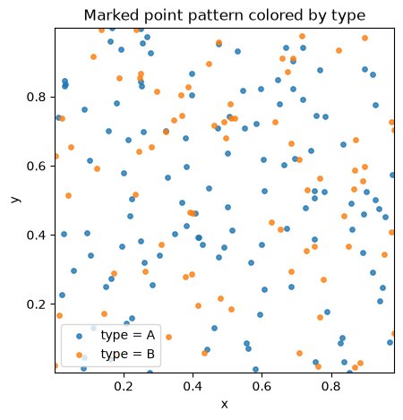
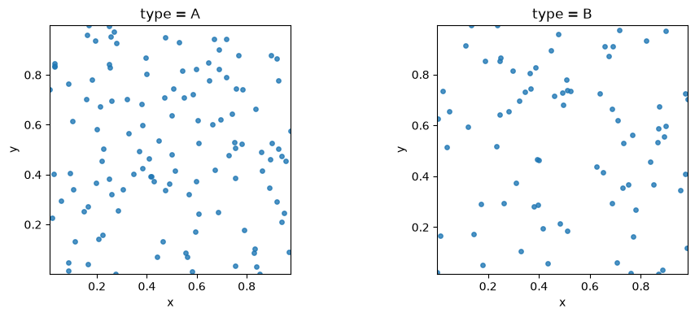
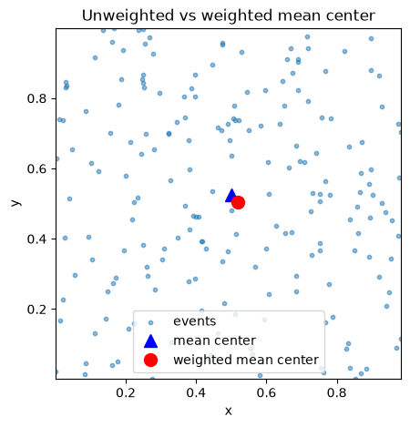

Working with marks in pointpats¶
In addition to the locations of events, a point pattern can have extra attributes attached to each point: these are called marks.
Examples of marks:
species of a tree (categorical)
crime type (categorical)
tree diameter (continuous)
number of injuries at an accident (count)
In pointpats, a marked point pattern is represented by a
PointPattern whose underlying data frame (pp.df) has extra columns
beyond the coordinates, or by adding marks using the add_marks method.
You can also split a marked pattern into separate unmarked patterns using
explode.
In this notebook we will:
Create an unmarked point pattern.
Attach categorical and numeric marks with
add_marks.Explore marks in the underlying pandas DataFrame.
Visualize the pattern by mark category.
Use
explodeto split the pattern into one pattern per mark level.Compute a weighted mean center using a numeric mark as weights.
Setup and imports¶
We will simulate points in the unit square [0, 1] × [0, 1] using the
random distributions in pointpats.random and then work with their marks.
import matplotlib.pyplot as plt
import numpy as np
from pointpats import ( # centrography functions
PointPattern,
mean_center,
weighted_mean_center,
)
from pointpats import random as ppr
# Make results reproducible
np.random.seed(42)
# Define a simple square hull as a bounding box: [xmin, ymin, xmax, ymax]
hull = np.array([0.0, 0.0, 1.0, 1.0])
hull
array([0., 0., 1., 1.])
1. Create an unmarked point pattern¶
First, we simulate 200 locations from a homogeneous Poisson point process
in the unit square and construct a PointPattern from the coordinates.
# Simulate 200 points in the unit square (unmarked pattern)
coords = ppr.poisson(hull, size=200)
coords.shape
(200, 2)
# Build an unmarked PointPattern
pp = PointPattern(coords)
pp.summary() # quick textual summary
pp.df.head() # underlying DataFrame with coordinates only (x, y)
Point Pattern
200 points
Bounding rectangle [(0.0010282489870176992,0.0019331479588154954), (0.9826194009762734,0.9992231146072637)]
Area of window: 0.9789310072297767
Intensity estimate for window: 204.30448981891897
x y
0 0.650241 0.778133
1 0.973824 0.726390
2 0.038919 0.515658
3 0.381917 0.597581
4 0.166812 0.999223
| x | y | |
|---|---|---|
| 0 | 0.650241 | 0.778133 |
| 1 | 0.973824 | 0.726390 |
| 2 | 0.038919 | 0.515658 |
| 3 | 0.381917 | 0.597581 |
| 4 | 0.166812 | 0.999223 |
At this stage, pp has only coordinates (x, y) and no marks.
Internally, PointPattern stores the data in a pandas DataFrame (pp.df).
Any extra columns we add will be treated as marks (attributes) of the
points.
2. Add categorical and numeric marks with add_marks¶
We will assign two marks to each point:
type: a categorical mark taking values'A'or'B'.value: a continuous mark drawn from a normal distribution.
We use the add_marks(marks, mark_names=None) method of PointPattern
to attach these attributes.
n = pp.n
# Categorical mark: two types, A and B
types = np.random.choice(["A", "B"], size=n, p=[0.6, 0.4])
# Numeric mark: e.g. "intensity" or "size" for each event
values = np.random.gamma(shape=2.0, scale=1.0, size=n)
# Attach both marks to the point pattern
pp.add_marks([types, values], mark_names=["type", "value"])
pp.df.head()
| x | y | type | value | |
|---|---|---|---|---|
| 0 | 0.650241 | 0.778133 | A | 0.933881 |
| 1 | 0.973824 | 0.726390 | B | 1.984845 |
| 2 | 0.038919 | 0.515658 | B | 2.074374 |
| 3 | 0.381917 | 0.597581 | A | 0.904084 |
| 4 | 0.166812 | 0.999223 | A | 5.422076 |
Now pp is a marked point pattern. The DataFrame has four columns:
x, y (coordinates) and type, value (marks).
We can work with marks using standard pandas tools, for example to compute simple summaries by type:
# Counts by categorical mark
pp.df["type"].value_counts()
type
A 122
B 78
Name: count, dtype: int64
# Mean of the numeric mark by type
pp.df.groupby("type")["value"].mean()
type
A 2.080500
B 2.019942
Name: value, dtype: float64
3. Visualizing a marked point pattern¶
Let’s write a helper to plot points colored by a categorical mark, here
type.
def plot_marked_pattern(pp, mark_column="type", ax=None, title=None):
"""Plot a marked point pattern, coloring by a categorical mark.
Parameters
----------
pp : pointpats.PointPattern
Marked point pattern.
mark_column : str
Column in `pp.df` containing categorical marks.
ax : matplotlib.axes.Axes, optional
Axis to plot on.
title : str, optional
Plot title.
"""
if ax is None:
fig, ax = plt.subplots(figsize=(5, 5))
df = pp.df
categories = df[mark_column].astype("category")
cats = categories.cat.categories
# Basic color cycle
colors = plt.rcParams["axes.prop_cycle"].by_key()["color"]
for i, cat in enumerate(cats):
sub = df[categories == cat]
ax.scatter(
sub[pp.coord_names[0]],
sub[pp.coord_names[1]],
s=15,
label=f"{mark_column} = {cat}",
color=colors[i % len(colors)],
alpha=0.8,
)
# Use the window of the pattern to set plot limits
xmin, ymin, xmax, ymax = pp.window.bbox
ax.set_xlim(xmin, xmax)
ax.set_ylim(ymin, ymax)
ax.set_aspect("equal", adjustable="box")
ax.set_xlabel(pp.coord_names[0])
ax.set_ylabel(pp.coord_names[1])
if title:
ax.set_title(title)
ax.legend(loc="best")
return ax
plot_marked_pattern(
pp, mark_column="type", title="Marked point pattern colored by type"
)
plt.show()

The colors distinguish the mark categories (type = 'A' vs type = 'B').
You can adapt the plotting function to map numeric marks to size or
color gradients if desired.
4. Splitting a marked pattern with explode¶
To analyze each mark category as its own point pattern, we can use the
explode(mark) method of PointPattern. It returns a list of
PointPattern objects, one per unique value of the mark.
# Unique categories in the "type" mark
categories = pp.df["type"].astype("category").cat.categories
categories
Index(['A', 'B'], dtype='str')
# Explode into a list of unmarked patterns, one per category
pps_by_type = pp.explode("type")
len(pps_by_type) # should match the number of unique categories
2
for cat, sub_pp in zip(categories, pps_by_type, strict=True):
print(f"Category {cat!r} -> {sub_pp.n} points")
Category 'A' -> 122 points
Category 'B' -> 78 points
We can visualize each category in its own panel to compare their spatial distributions.
fig, axes = plt.subplots(1, len(pps_by_type), figsize=(5 * len(pps_by_type), 4))
if len(pps_by_type) == 1:
axes = [axes]
for ax, cat, sub_pp in zip(axes, categories, pps_by_type, strict=True):
df = sub_pp.df
xname, yname = sub_pp.coord_names
ax.scatter(df[xname], df[yname], s=15, alpha=0.8)
xmin, ymin, xmax, ymax = sub_pp.window.bbox
ax.set_xlim(xmin, xmax)
ax.set_ylim(ymin, ymax)
ax.set_aspect("equal", adjustable="box")
ax.set_title(f"type = {cat}")
ax.set_xlabel(xname)
ax.set_ylabel(yname)
plt.tight_layout()
plt.show()

Each panel now shows the points belonging to a single mark category.
This is useful when you want to treat each type as its own point pattern (e.g., trees of different species, crimes of different types) and compare their intensities, clustering, or nearest-neighbor behavior.
5. Using numeric marks as weights: weighted mean center¶
Numeric marks are often used as weights when summarizing the pattern. For example, you might weight accidents by the number of injuries or trees by their biomass.
The function weighted_mean_center(points, weights) computes a
weighted mean center, where each point contributes proportionally to its
weight.
Here we compare the (unweighted) mean center of the pattern to the
weighted mean center using the value mark as weights.
# Unweighted mean center
mc = mean_center(pp.points)
# Weighted mean center using the numeric mark "value" as weights
wmc = weighted_mean_center(pp.points, pp.df["value"].values)
mc, wmc
(array([0.50034102, 0.52476393]), array([0.51757693, 0.50517119]))
fig, ax = plt.subplots(figsize=(5, 5))
# Plot marked pattern with small gray points
ax.scatter(
pp.df[pp.coord_names[0]], pp.df[pp.coord_names[1]], s=10, alpha=0.5, label="events"
)
xmin, ymin, xmax, ymax = pp.window.bbox
ax.set_xlim(xmin, xmax)
ax.set_ylim(ymin, ymax)
ax.set_aspect("equal", adjustable="box")
# Add unweighted and weighted mean centers
ax.plot(mc[0], mc[1], "b^", markersize=10, label="mean center")
ax.plot(wmc[0], wmc[1], "ro", markersize=10, label="weighted mean center")
ax.set_xlabel(pp.coord_names[0])
ax.set_ylabel(pp.coord_names[1])
ax.set_title("Unweighted vs weighted mean center")
ax.legend()
plt.show()

The weighted mean center is pulled toward points with larger value.
This is a simple example of how numeric marks can affect spatial
summaries.
6. Creating a marked pattern directly from an array¶
Instead of starting with an unmarked pattern and calling add_marks,
you can also pass a full (n, p) array (coordinates + attributes) into
PointPattern and specify names for the columns.
In this example we build a second point pattern whose coordinates and marks are all stored in a single NumPy array:
# Build a new (n, 4) array: x, y, type_code, value
type_code = (types == "B").astype(float) # 0 for A, 1 for B
points_with_marks = np.column_stack([pp.points, type_code, values])
names = ["x", "y", "type_code", "value"]
pp2 = PointPattern(points_with_marks, names=names)
pp2.df.head()
| x | y | type_code | value | |
|---|---|---|---|---|
| 0 | 0.650241 | 0.778133 | 0.0 | 0.933881 |
| 1 | 0.973824 | 0.726390 | 1.0 | 1.984845 |
| 2 | 0.038919 | 0.515658 | 1.0 | 2.074374 |
| 3 | 0.381917 | 0.597581 | 0.0 | 0.904084 |
| 4 | 0.166812 | 0.999223 | 0.0 | 5.422076 |
Here, pp2 is also a marked point pattern: x, y are coordinates,
and type_code, value are marks.
This pattern (constructing a full (n, p) table and passing it to
PointPattern) is convenient when your data already live in a
DataFrame or when loading from a CSV or GIS table.
Recap¶
In this notebook, we have:
Built an unmarked
PointPatternfrom simulated coordinates.Attached categorical and numeric marks with
add_marks.Used
pp.df(a pandas DataFrame) to summarize marks by category.Visualized a marked point pattern with color by categorical mark.
Applied
explodeto split a marked pattern into separate patterns, one per mark category.Computed a weighted mean center using a numeric mark as weights.
Created a marked pattern directly from a full
(n, p)array with coordinate and mark columns.
These tools form the core of working with marked point patterns in
pointpats. You can combine them with quadrat statistics, distance-based
functions, and space–time tests for more advanced analyses.